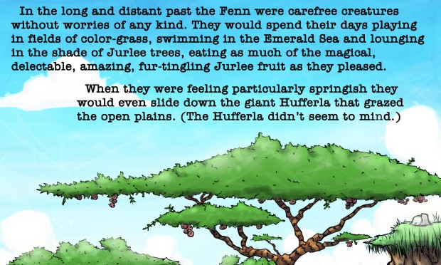
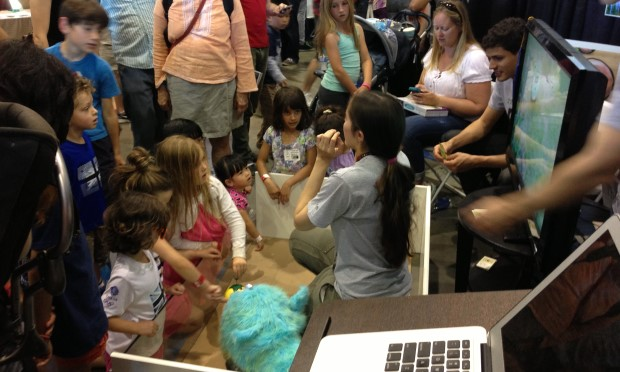
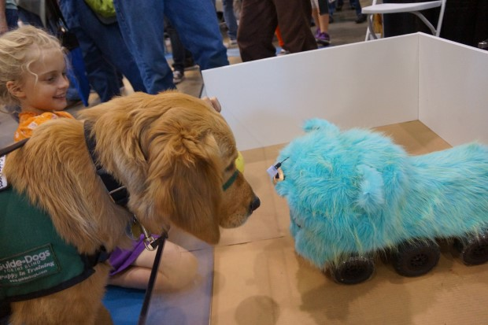

Embodied AI was the company behind The Fenn, a pet-alternative robot and line of characters. Each robot was connected to a cloud based AI stack allowing the robot to play fetch with a provided ball, detect faces, and navigate in simple environments.
Initial character design sketches.
The Fenn characters were given a full backstory in an (unreleased) children's book which I wrote and which was illustrated by the extremely talented Archie Pape-Valdez.
Book page. (Click for full page)
Prototype character realization (fur, skin, and body structure).
The robot was constructed out of off-the-shelf components and a custom exterior. A Wild Thumper base provided high-powered and robust maneuverability over a variety of surfaces. A four degree-of-freedom chain of Dynamixel servos provided head motion and the ability to track objects and pick up a custom ball with an embedded electro magnet. The eyes were a standard Nexus 1 phone which provided vision and some onboard image processing. A Raspberry Pi coordinated data from the phone and cloud with the servos and wheel motor controller. Additional emotion cues were provided by RGB LED light strips under the skin of the robot.
Booth at Maker Faire.
The Fenn won an Editor's Choice awards when presented at Maker Faire and was featured in a wired segment called "Meet the Fenn". In the space of a few hours we had offers to purchase the prototype, invest in the company, and provide connections to Shenzhen manufacturers.
The robot was quite popular with children.
The primary interaction demonstrated was "ball following." When the robot caught sight of its ball it would stop to watch it and track the ball with its head. This was immediately accessible to and understood by children. A "hidden" interaction was also available. If you poked the robot in the eyes it would back away quickly and shake its head. Boys seemed to like doing this repeatedly.
Even dogs seemed to be interested.
Embodied AI, Inc. wound down operations in 2015. It was an exhilerating learning experience and paved the way to my time at Fetch Robotics. The proximal cause of Embodied AI's end was a lack of funding, but the root cause was my inexperience with the realities of manufacturing consumer robotics. A deficit I have since rectified.